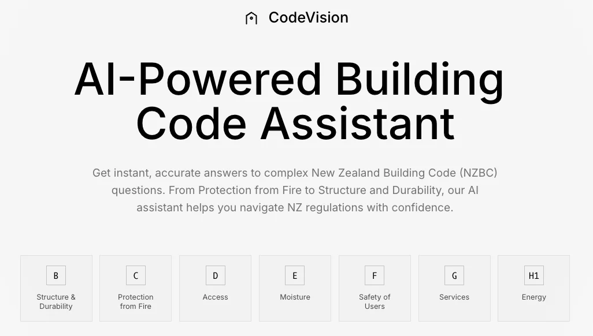

Agents over a single model
Specialist agents for fire, structure, weathertightness, and accessibility — orchestrated via the OpenAI Agents SDK with a routing layer.
Building-code agent for the web

AI applications / CodeVisionCodeVision is a web application that delivers real-time NZ Building Code guidance to designers, builders, and compliance staff. A team of specialised AI agents — each scoped to a section of the code — collaborate via the OpenAI Agents SDK to answer questions, surface citations, and flag ambiguity.
Building code is dense, fragmented, and slow to navigate. Practitioners lose hours flipping between PDFs, amendments, and acceptable solutions when they need a confident, sourced answer.
Specialist agents for fire, structure, weathertightness, and accessibility — orchestrated via the OpenAI Agents SDK with a routing layer.
pgvector + Supabase auth backs every reply with citations to the exact clause.
Next.js + FastAPI deployed on Firebase Hosting and Google Cloud Run. Streaming responses, persistent sessions, evaluation hooks.
Explore the material
behind the project.
Explore the project images and demonstrations in this case study.
Screen recording of the CodeVision workflow in use.
Have an idea, a challenge, or a different perspective?
I’d love to hear it.
{kind=link}